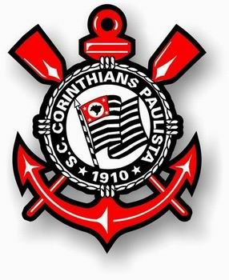

Corinthians (1910-....)
1910 A fundação
Às 20h30 do dia 1º de setembro, à luz de um lampião, na esquina das ruas José Paulino e Cônego Martins, no bairro do Bom Retiro, o grupo de operários formado por Anselmo Corrêa, Antônio Pereira, Carlos Silva, Joaquim Ambrósio e Raphael Perrone fundaram o Sport Club Corinthians Paulista. Com mais oito rapazes, foi formada a reunião dos primeiros integrantes e sócio-fundadores do Timão, que teve seu nome inspirado na equipe inglesa Corinthian-Casuals Football Club, que fazia excursão pelo Brasil.
Suas cores tradicionais são o branco e o preto